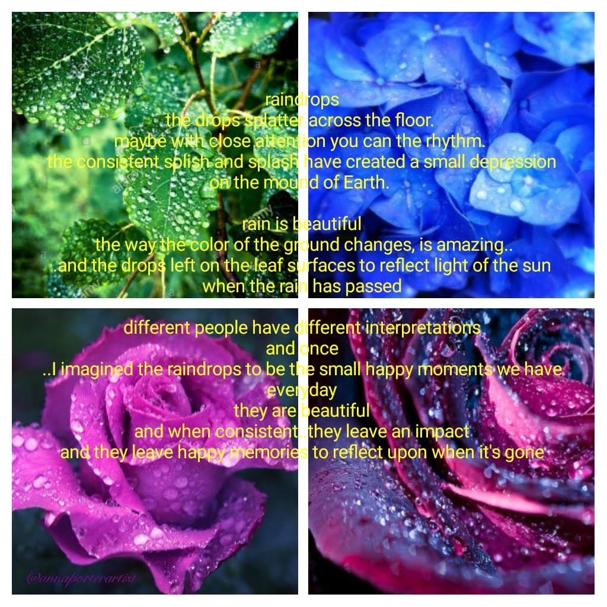
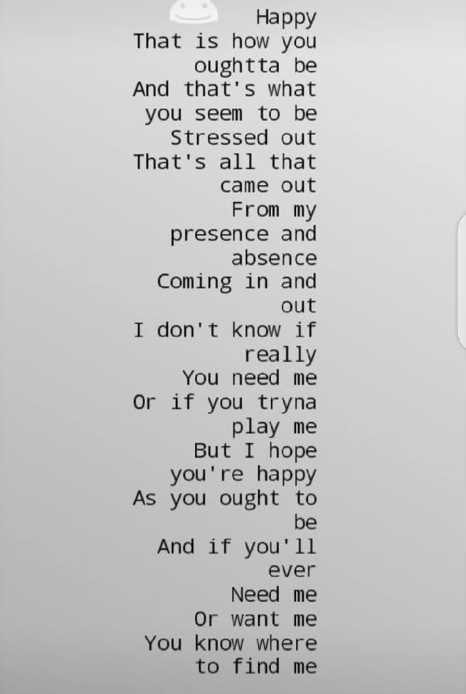

POETRY CORNER
Raindrops | Virginia, Steve Annex

Raindrops
The drops splatter across the floor.
Maybe with close attention you can hear the rhythm
The consistent splash have created s,all depressions
On the mound of Earth.
Rain is beautiful
The way the color of the ground changes, is amazing…
And the drops left on the leaf surfaces to reflect light of the sun
When the rain has passed
Different people have different interpretations
And Once
… I imagined the raindrops to be small happy moments we have
Everyday
They are beautiful
And when consistent they leave an impact
And they leave happy memories to reflect upon when it’s gone.
The Forbidden Tree | Faith Katheu Arts, Steve Annex

The forbidden tree;
My forbidden tree,
your fruits, oh, so
beautiful,
tempting and attractive,
calling me into your cage.
I so solemnly want to
take a bite and
taste what you have
that has me drooling.
But I avoid you,
keeping my distance from you,
knowing that at the first bite-
at that first bite-
I will want more than you have;
more than you could give.
So as beautiful as you are,
I leave you be,
keeping safe distance away
as I am the tempted Eve.
So I’ll stay in my own cage,
with my ugly heart,
my ugly scars and desires,
my rotten thoughts and behaviours,
to keep you, oh Forbidden,
safe and sound.
~ The Forbidden ~
Pretense | Faith Katheu Arts, Steve Annex

Does anybody see
the tears in her eyes,
the pain that she hides,
or do you just see, the smiles she
uses as a disguise?
Does anybody hear
the fear in her voice,
the shriek in her scream,
or is it just, the joy in her tone?
Does anybody feel
the weak beats
her fragile heart makes,
the slow blood flow in her veins,
or is it, just a good hug?
Does anybody overlook
the stories she tells,
the joy she brings,
or do you just, look at her smiles?
She cries herself to sleep, everyday.
The shriek in her voice,
no one can tell.
But she won’t let you know;
she does not want to.
The pain she feels
she just cannot tell,
and so, she chooses to pretend.
Who would know anyway?
~ Pretense ~
911 | Faith Katheu Arts

Happy;
that is how you ought to be,
and is what you seem to be.
Stressed out;
that is all that came out
from my presence and absence;
from our coming in and out.
I do not know if you really
need me,
or if you’re trying to play me.
But I hope you’re as happy
as you ought to be,
and if you’ll ever need me
or want me,
you know where to find me.
~ 911 ~
Golden Aura | WambuiNjau
Hi She's got a golden aura
Some light spewing from her existence
Smiles and rainbowsLike the sun breathes its life into her
And that energy pulses through her veins
It is entwined with her nerves
It is her impulse
Her breathHer heartbeat
And
Her lifestyle
Don't get me wrong,She's not all halos and floating feet
She's got a warrior's soul
And the spirit of a phoenix
So as you keep rubbing sticks against her skin
You should knowWhen a spark finally surfaces
A relentless fire is born
She will fight with everything she has
With every weapon in her arsenal
And she will make sure she wins
-Wambui Njau-
Pixie Dust | WambuiNjau

What did you dream of as a child
I bet you thought you could take on the world
You believed that
The universe was your battlefield
Anything less was undeserving of you
And your efforts However,
...
As you grow up The pixie dust that you showered in as child
Doesn't work And you can't fly anymore
After all you were never really magical
Or so you believe Tinkerbell tries
She tries to tinker her way out of the cage you put her in
But you don't believe anymore
She hopes one day you will
And for when you choose to believe in you again
Ask for some fairy dustAnd set out for the skies
Stop by the second star to the right,
Straight on till the morning
To say hey to Peter Pan.
When you're done Keeping exploring the skies And even if you stumble
Don't let anything stop you .
-Wambui Njau-